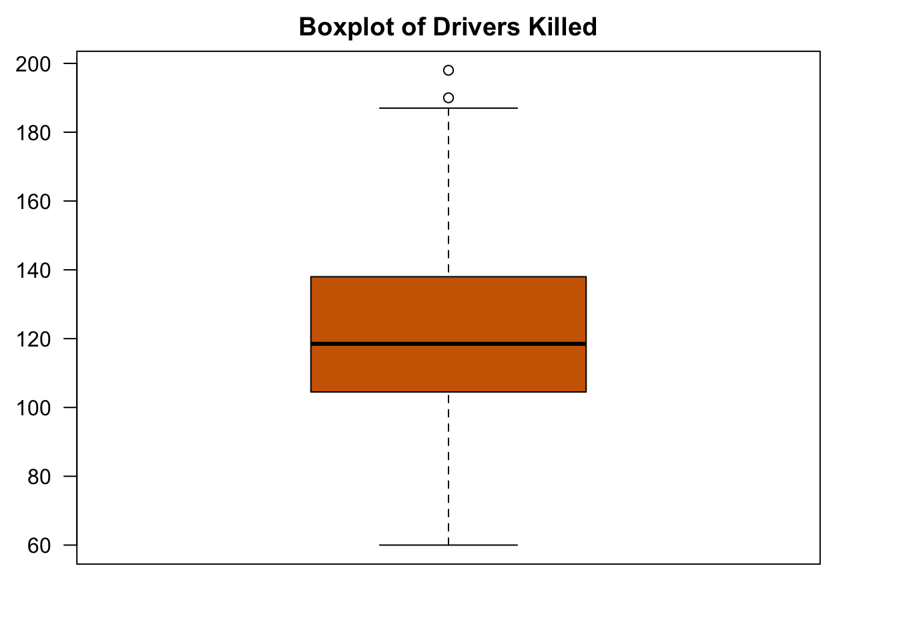
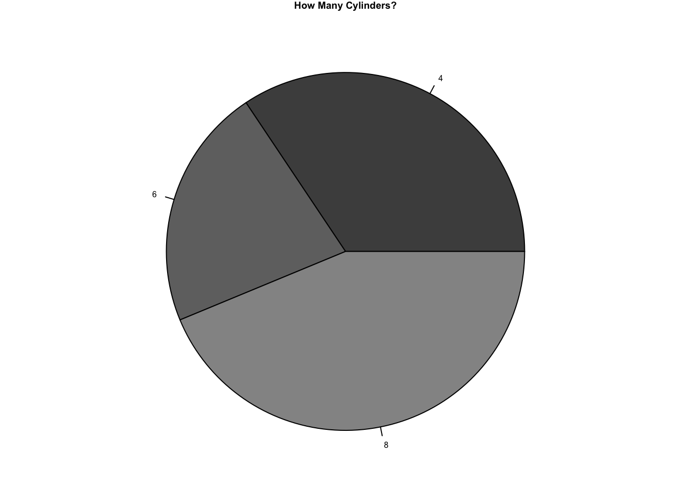
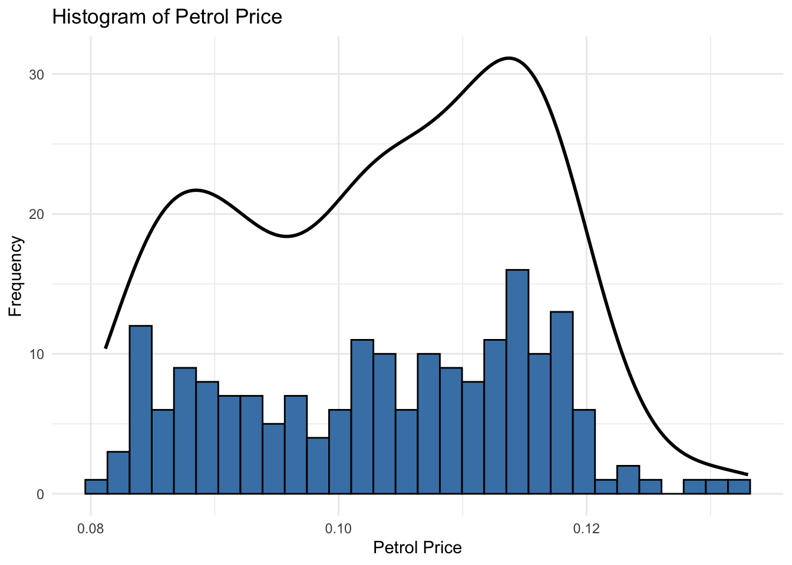
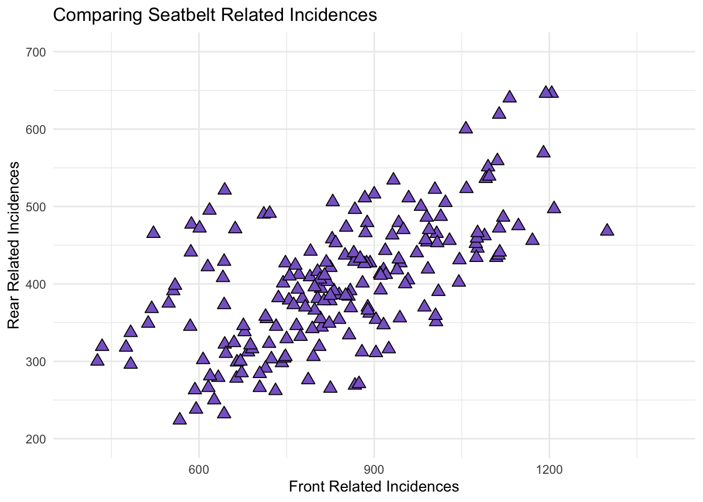
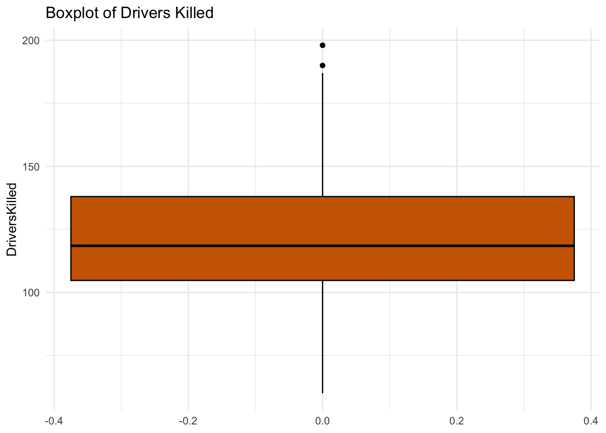
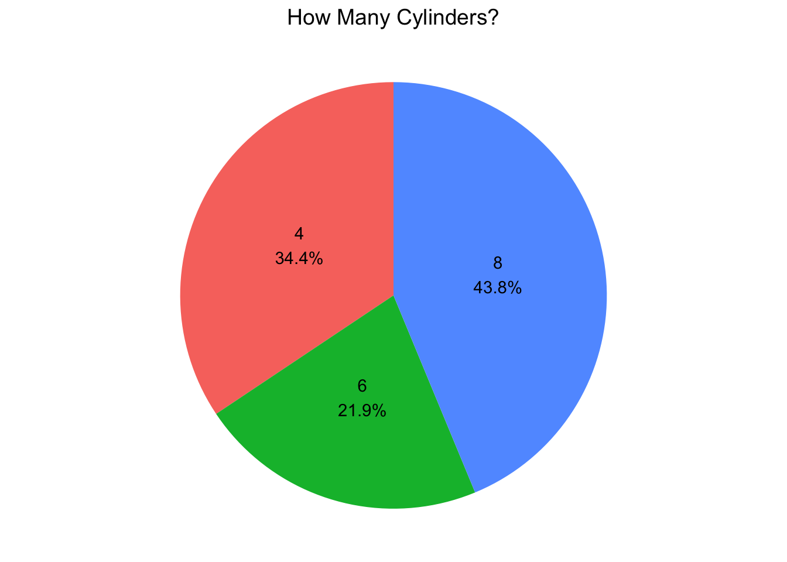

data(Seatbelts)seatbelt <-data.frame (Year=floor(time(Seatbelts)) ,Month=factor(cycle(Seatbelts) ,labels=month.abb) , Seatbelts)# floor() returns largest integer smaller or equal# time looks for execution time? establishes time series# cycle just repeats it?# month.abb means three letter abbreviation for English monthsstr(seatbelt)
'data.frame': 192 obs. of 10 variables:
$ Year : Time-Series from 1969 to 1985: 1969 1969 1969 1969 1969 ...
$ Month : Factor w/ 12 levels "Jan","Feb","Mar",..: 1 2 3 4 5 6 7 8 9 10 ...
$ DriversKilled: num 107 97 102 87 119 106 110 106 107 134 ...
$ drivers : num 1687 1508 1507 1385 1632 ...
$ front : num 867 825 806 814 991 ...
$ rear : num 269 265 319 407 454 427 522 536 405 437 ...
$ kms : num 9059 7685 9963 10955 11823 ...
$ PetrolPrice : num 0.103 0.102 0.102 0.101 0.101 ...
$ VanKilled : num 12 6 12 8 10 13 11 6 10 16 ...
$ law : num 0 0 0 0 0 0 0 0 0 0 ...
#factors -> categorical variables - fixed, known set - think month - correlated numberhead(seatbelt)
Year Month DriversKilled drivers front rear kms PetrolPrice VanKilled law
1 1969 Jan 107 1687 867 269 9059 0.1029718 12 0
2 1969 Feb 97 1508 825 265 7685 0.1023630 6 0
3 1969 Mar 102 1507 806 319 9963 0.1020625 12 0
4 1969 Apr 87 1385 814 407 10955 0.1008733 8 0
5 1969 May 119 1632 991 454 11823 0.1010197 10 0
6 1969 Jun 106 1511 945 427 12391 0.1005812 13 0
#Create a histogram# Random dataY <-rnorm(50)# Make sure no Y exceed [-3.5, 3.5]Y[Y <-3.5| Y >3.5] <-NA# Selection/set rangex <-seq(-3.5, 3.5, .1)dn <-dnorm(x)par(mar=c(4.5, 4.1, 3.1, 0))hist(Y, breaks=seq(-3.5, 3.5), ylim=c(0, 0.5), col="gray80", freq=FALSE)lines(x, dnorm(x), lwd=2)
#BoxPlotboxplot(seatbelt$DriversKilled,main ="Boxplot of Drivers Killed",ylab ="Deaths",col ="darkorange3",border ="black")

#PieChart - mtcars #note to self - take note of which datsets are appropriate for different forms of graphs in the futuredata(mtcars)# Create a pie chart showing the distribution of cylinder countsdata(mtcars)View(mtcars)cylinder_counts <-table(mtcars$cyl)par(mar=c(0, 2, 1, 2), xpd=FALSE, cex=0.5)pie(cylinder_counts, labels =names(cylinder_counts), main ="How Many Cylinders?", col =gray(seq(0.3,1.0,length=6)))

Plotting With GGPlot
library(tidyverse)
── Attaching core tidyverse packages ──────────────────────── tidyverse 2.0.0 ──
✔ dplyr 1.1.3 ✔ readr 2.1.4
✔ forcats 1.0.0 ✔ stringr 1.5.0
✔ ggplot2 3.4.3 ✔ tibble 3.2.1
✔ lubridate 1.9.2 ✔ tidyr 1.3.0
✔ purrr 1.0.2
── Conflicts ────────────────────────────────────────── tidyverse_conflicts() ──
✖ dplyr::filter() masks stats::filter()
✖ dplyr::lag() masks stats::lag()
ℹ Use the conflicted package (<http://conflicted.r-lib.org/>) to force all conflicts to become errors
data(Seatbelts)seatbelt <-data.frame (Year=floor(time(Seatbelts)) ,Month=factor(cycle(Seatbelts) ,labels=month.abb) , Seatbelts)# floor() returns largest integer smaller or equal# time looks for execution time? establishes time series# cycle just repeats it?# month.abb means three letter abbreviation for English monthsView(seatbelt)str(seatbelt)
'data.frame': 192 obs. of 10 variables:
$ Year : Time-Series from 1969 to 1985: 1969 1969 1969 1969 1969 ...
$ Month : Factor w/ 12 levels "Jan","Feb","Mar",..: 1 2 3 4 5 6 7 8 9 10 ...
$ DriversKilled: num 107 97 102 87 119 106 110 106 107 134 ...
$ drivers : num 1687 1508 1507 1385 1632 ...
$ front : num 867 825 806 814 991 ...
$ rear : num 269 265 319 407 454 427 522 536 405 437 ...
$ kms : num 9059 7685 9963 10955 11823 ...
$ PetrolPrice : num 0.103 0.102 0.102 0.101 0.101 ...
$ VanKilled : num 12 6 12 8 10 13 11 6 10 16 ...
$ law : num 0 0 0 0 0 0 0 0 0 0 ...
#factors -> categorical variables - fixed, known set - think month - correlated numberhead(seatbelt)
Year Month DriversKilled drivers front rear kms PetrolPrice VanKilled law
1 1969 Jan 107 1687 867 269 9059 0.1029718 12 0
2 1969 Feb 97 1508 825 265 7685 0.1023630 6 0
3 1969 Mar 102 1507 806 319 9963 0.1020625 12 0
4 1969 Apr 87 1385 814 407 10955 0.1008733 8 0
5 1969 May 119 1632 991 454 11823 0.1010197 10 0
6 1969 Jun 106 1511 945 427 12391 0.1005812 13 0
#Create a histogram - original# Y <- seatbelt$PetrolPrice# dn <- dnorm(x)# hist(Y) #simple# hist(Y,col="steelblue")# lines(density(seatbelt$PetrolPrice),lwd =2, col = 'black')Y <- seatbelt$PetrolPriceggplot(data =data.frame(Y = Y), aes(x = Y)) +geom_histogram(color ='black', fill ='steelblue', bins =30) +geom_density(color ='black', linewidth =1) +labs(title ='Histogram of Petrol Price',x ='Petrol Price',y ='Frequency') +theme_minimal()

#Create a Scatterplot (basics notes)# x <-seatbelt$front#y <-seatbelt$rear#par(las=1, mar=c(4, 4, 5, 4))#plot.new()#plot.window(xlim=c(400,1400), ylim=c(200, 700))#points(x, y, pch=5, cex=0.5)#par(col="black", fg="black", col.axis="black")#axis(1, at=seq(400, 1400, 300))#axis(2, at=seq(200,700,100))##plotting a box on just 2 axes#box(bty="L")#mtext("Front Related Incidences", side=1, line=3, cex=0.8)#las 0 means sideways label#mtext("Rear Related Incidences", side=2, line=3, las=0, cex=0.8)#mtext("Comparing Seatbelt Related Incidences", side=3, line=3,cex=1)#par(mar=c(3, 3, 2, 3), col="black", fg="black", col.axis="black")#Scatterplot ggplot2x <-seatbelt$fronty <-seatbelt$rearggplot(data =data.frame(x = x, y = y), aes(x = x, y = y)) +geom_point(shape =24, size =3, fill ="mediumpurple3") +xlim(400, 1400) +ylim(200, 700) +labs(title ="Comparing Seatbelt Related Incidences",x ="Front Related Incidences",y ="Rear Related Incidences") +theme_minimal()

#HorizontalBarChartseatbelt$decade <-10* (seatbelt$Year %/%10)fatalitiesbydecade <-table(seatbelt$decade)ggplot(data =data.frame(decade =as.factor(names(fatalitiesbydecade)),deaths =as.numeric(fatalitiesbydecade)), aes(x = decade, y = deaths, fill = decade)) +geom_bar(stat ="identity") +labs(title ="Deaths by Decade",x ="Decade",y ="Number of Deaths") +theme_minimal() +scale_fill_manual(values =c("darkolivegreen4", "darkolivegreen2", "darkolivegreen4")) +coord_flip()
#BoxPlot boxplot(seatbelt$DriversKilled,# main = "Boxplot of Drivers Killed",# ylab = "Deaths",#col = "darkorange3",# border = "black")ggplot(data =data.frame(DriversKilled = seatbelt$DriversKilled), aes(y = DriversKilled)) +geom_boxplot(color ="black", fill ="darkorange3") +labs(title ="Boxplot of Drivers Killed",ylab ="Deaths") +theme_minimal()

#PieChart - mtcars #note to self - take note of which datsets are appropriate for different forms of graphs in the futuredata(mtcars)# Create a pie chart showing the distribution of cylinder countsdata(mtcars)View(mtcars)cylinder_counts <-table(mtcars$cyl)#Data Framepie_data <-data.frame(cylinder =factor(names(cylinder_counts), levels =names(cylinder_counts)),count =as.numeric(cylinder_counts))# Calculate percentages for the labelspie_data$percent <- pie_data$count /sum(pie_data$count) *100pie_data$label <-paste0(pie_data$cylinder, "\n", round(pie_data$percent, 1), "%")#actual plotggplot(data = pie_data, aes(x ="", y = percent, fill = cylinder)) +geom_bar(width =1, stat ="identity") +coord_polar("y") +theme_void() +theme(plot.title =element_text(hjust =0.5, size =14),legend.position ="none" ) +ggtitle("How Many Cylinders?") +geom_text(aes(label = label), position =position_stack(vjust =0.5))

Exporting Charts
data(Seatbelts)seatbelt <-data.frame (Year=floor(time(Seatbelts)) ,Month=factor(cycle(Seatbelts) ,labels=month.abb) , Seatbelts)x <-seatbelt$fronty <-seatbelt$rearpar(las=1, mar=c(4, 4, 5, 4))plot.new()plot.window(xlim=c(400,1400), ylim=c(200, 700))points(x, y, pch=5, cex=0.5)par(col="black", fg="black", col.axis="black")axis(1, at=seq(400, 1400, 300))axis(2, at=seq(200,700,100))#plotting a box on just 2 axesbox(bty="L")mtext("Front Related Incidences", side=1, line=3, cex=0.8)#las 0 means sideways labelmtext("Rear Related Incidences", side=2, line=3, las=0, cex=0.8)mtext("Comparing Seatbelt Related Incidences", side=3, line=3,cex=1)
par(mar=c(3, 3, 2, 3), col="black", fg="black", col.axis="black")#Examples#pdf(“rplot.pdf”): pdf file#png(“rplot.png”): png file#jpeg(“rplot.jpg”): jpeg file#postscript(“rplot.ps”): postscript file#bmp(“rplot.bmp”): bmp file#win.metafile(“rplot.wmf”): windows metafile#pngpng("scatterplot.png")par(las=1, mar=c(4, 4, 5, 4))plot.new()plot.window(xlim=c(400,1400), ylim=c(200, 700))points(x, y, pch=5, cex=0.5)par(col="black", fg="black", col.axis="black")axis(1, at=seq(400, 1400, 300))axis(2, at=seq(200,700,100))#plotting a box on just 2 axesbox(bty="L")mtext("Front Related Incidences", side=1, line=3, cex=0.8)#las 0 means sideways labelmtext("Rear Related Incidences", side=2, line=3, las=0, cex=0.8)mtext("Comparing Seatbelt Related Incidences", side=3, line=3,cex=1)par(mar=c(3, 3, 2, 3), col="black", fg="black", col.axis="black")dev.off()
quartz_off_screen
2
#jpgpng("scatterplot.jpg")par(las=1, mar=c(4, 4, 5, 4))plot.new()plot.window(xlim=c(400,1400), ylim=c(200, 700))points(x, y, pch=5, cex=0.5)par(col="black", fg="black", col.axis="black")axis(1, at=seq(400, 1400, 300))axis(2, at=seq(200,700,100))#plotting a box on just 2 axesbox(bty="L")mtext("Front Related Incidences", side=1, line=3, cex=0.8)#las 0 means sideways labelmtext("Rear Related Incidences", side=2, line=3, las=0, cex=0.8)mtext("Comparing Seatbelt Related Incidences", side=3, line=3,cex=1)par(mar=c(3, 3, 2, 3), col="black", fg="black", col.axis="black")dev.off()
quartz_off_screen
2
#svgpng("scatterplot.svg")par(las=1, mar=c(4, 4, 5, 4))plot.new()plot.window(xlim=c(400,1400), ylim=c(200, 700))points(x, y, pch=5, cex=0.5)par(col="black", fg="black", col.axis="black")axis(1, at=seq(400, 1400, 300))axis(2, at=seq(200,700,100))#plotting a box on just 2 axesbox(bty="L")mtext("Front Related Incidences", side=1, line=3, cex=0.8)#las 0 means sideways labelmtext("Rear Related Incidences", side=2, line=3, las=0, cex=0.8)mtext("Comparing Seatbelt Related Incidences", side=3, line=3,cex=1)par(mar=c(3, 3, 2, 3), col="black", fg="black", col.axis="black")dev.off()
quartz_off_screen
2
#tiffpng("scatterplot.tiff")par(las=1, mar=c(4, 4, 5, 4))plot.new()plot.window(xlim=c(400,1400), ylim=c(200, 700))points(x, y, pch=5, cex=0.5)par(col="black", fg="black", col.axis="black")axis(1, at=seq(400, 1400, 300))axis(2, at=seq(200,700,100))#plotting a box on just 2 axesbox(bty="L")mtext("Front Related Incidences", side=1, line=3, cex=0.8)#las 0 means sideways labelmtext("Rear Related Incidences", side=2, line=3, las=0, cex=0.8)mtext("Comparing Seatbelt Related Incidences", side=3, line=3,cex=1)par(mar=c(3, 3, 2, 3), col="black", fg="black", col.axis="black")dev.off()
quartz_off_screen
2
#bmgpng("scatterplot.bmg")par(las=1, mar=c(4, 4, 5, 4))plot.new()plot.window(xlim=c(400,1400), ylim=c(200, 700))points(x, y, pch=5, cex=0.5)par(col="black", fg="black", col.axis="black")axis(1, at=seq(400, 1400, 300))axis(2, at=seq(200,700,100))#plotting a box on just 2 axesbox(bty="L")mtext("Front Related Incidences", side=1, line=3, cex=0.8)#las 0 means sideways labelmtext("Rear Related Incidences", side=2, line=3, las=0, cex=0.8)mtext("Comparing Seatbelt Related Incidences", side=3, line=3,cex=1)par(mar=c(3, 3, 2, 3), col="black", fg="black", col.axis="black")dev.off()
quartz_off_screen
2
#notes - PNG has the highest quality, whereas jpg and tiff have lower qualities. We cannot access the svg and bmg as presented with full graphics.